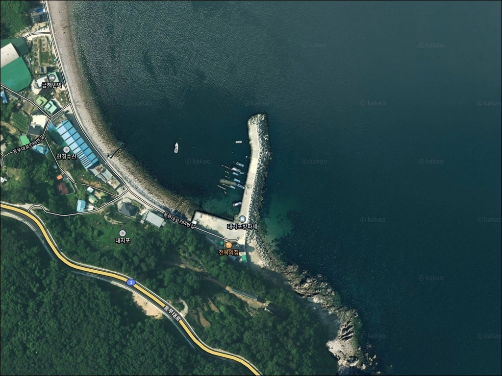
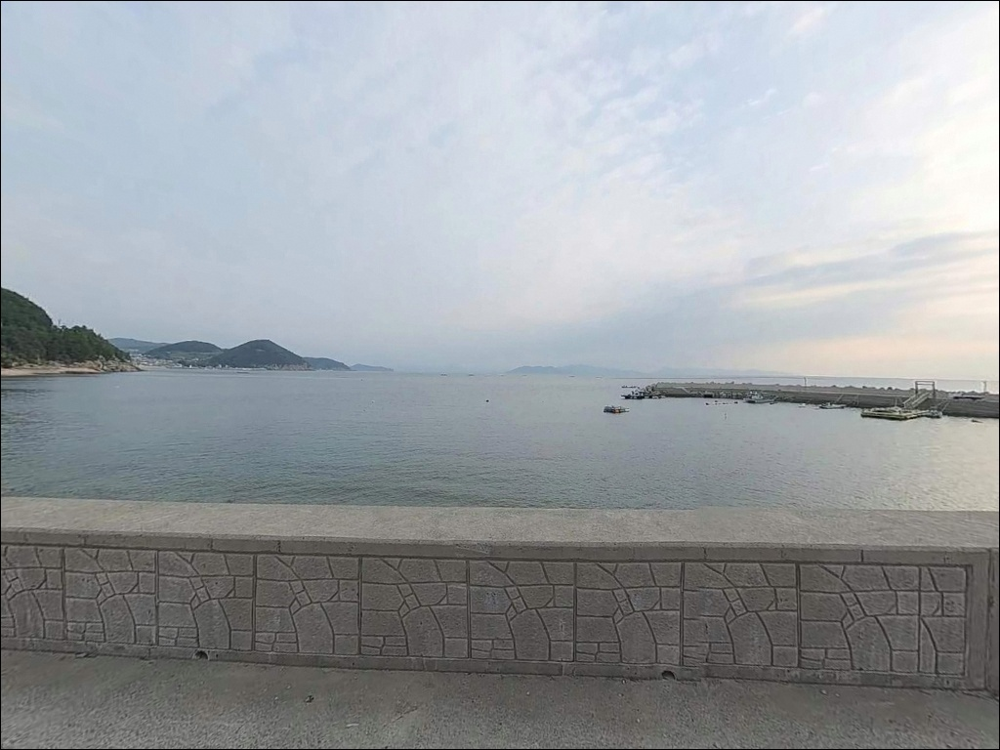
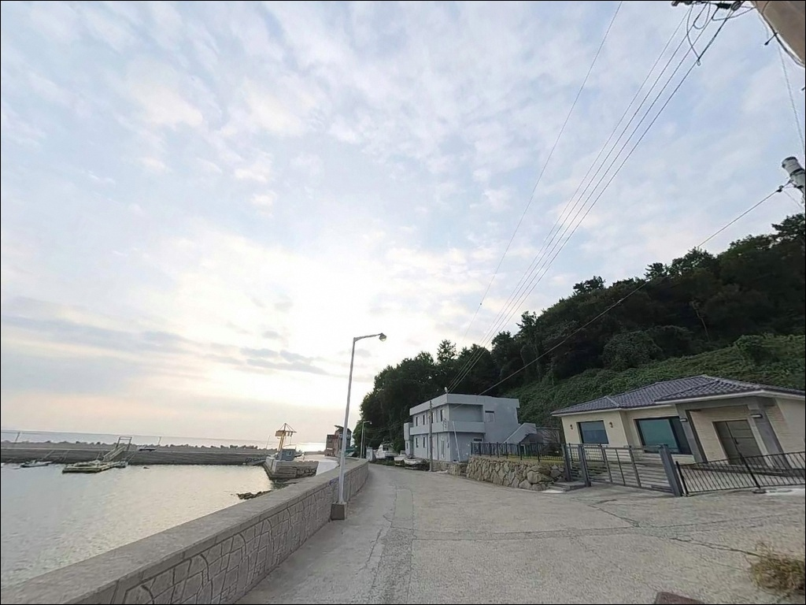
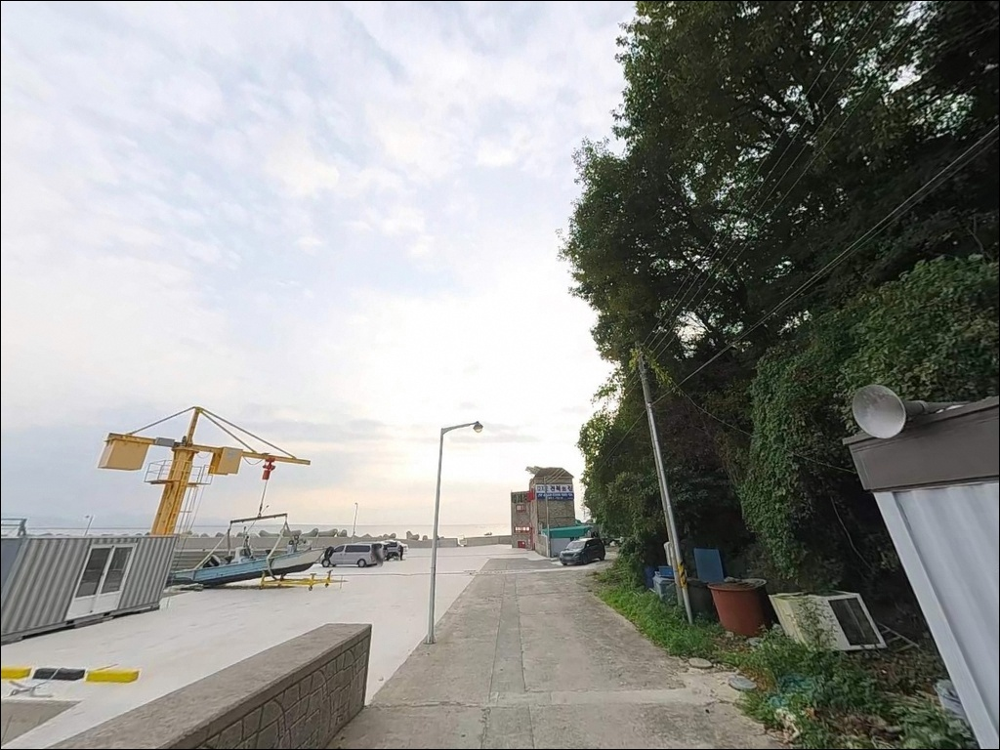
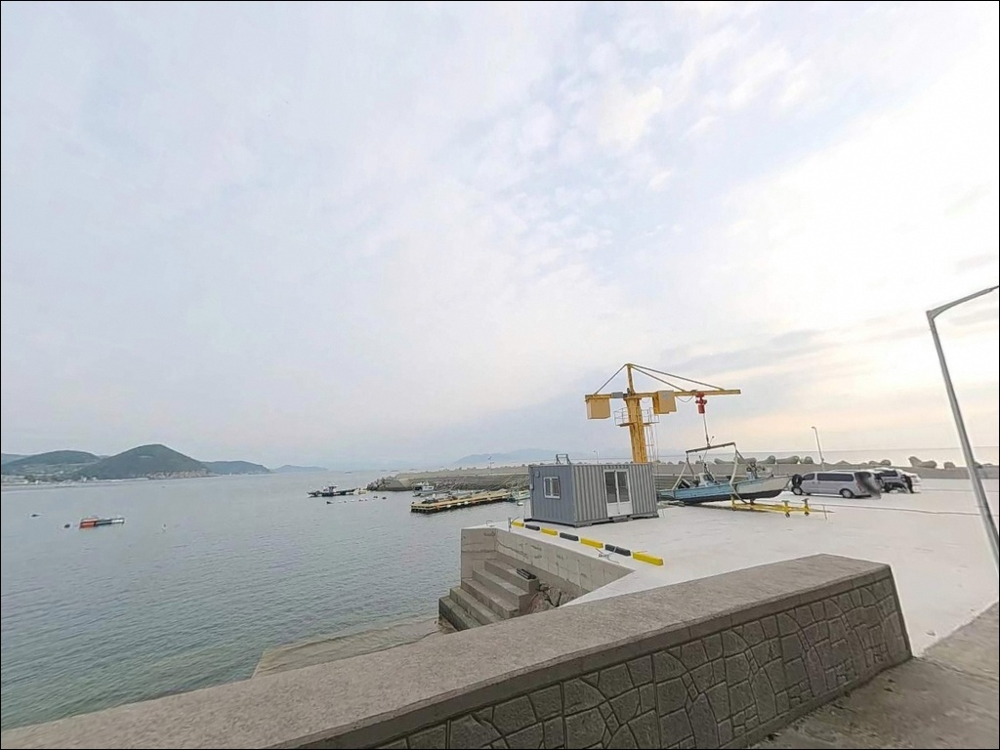
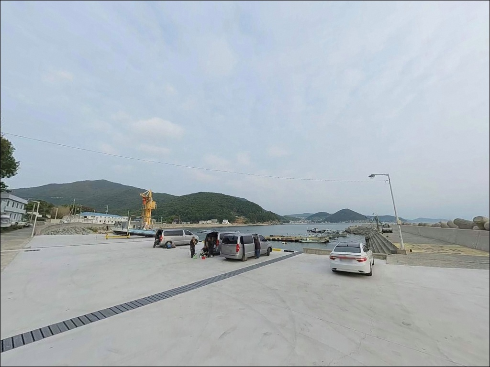
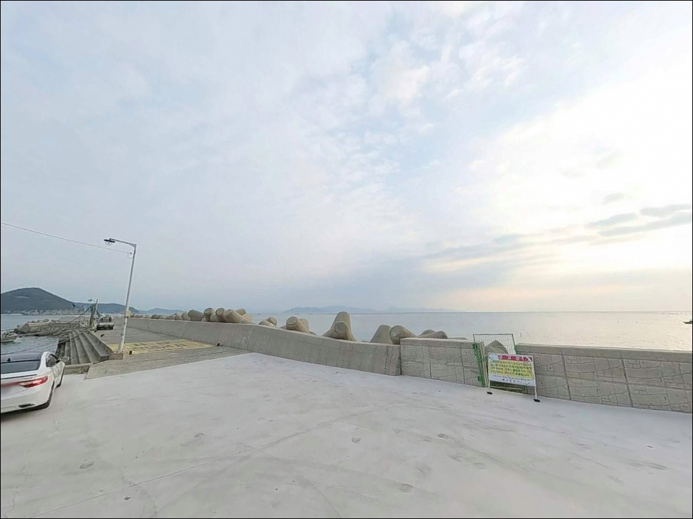
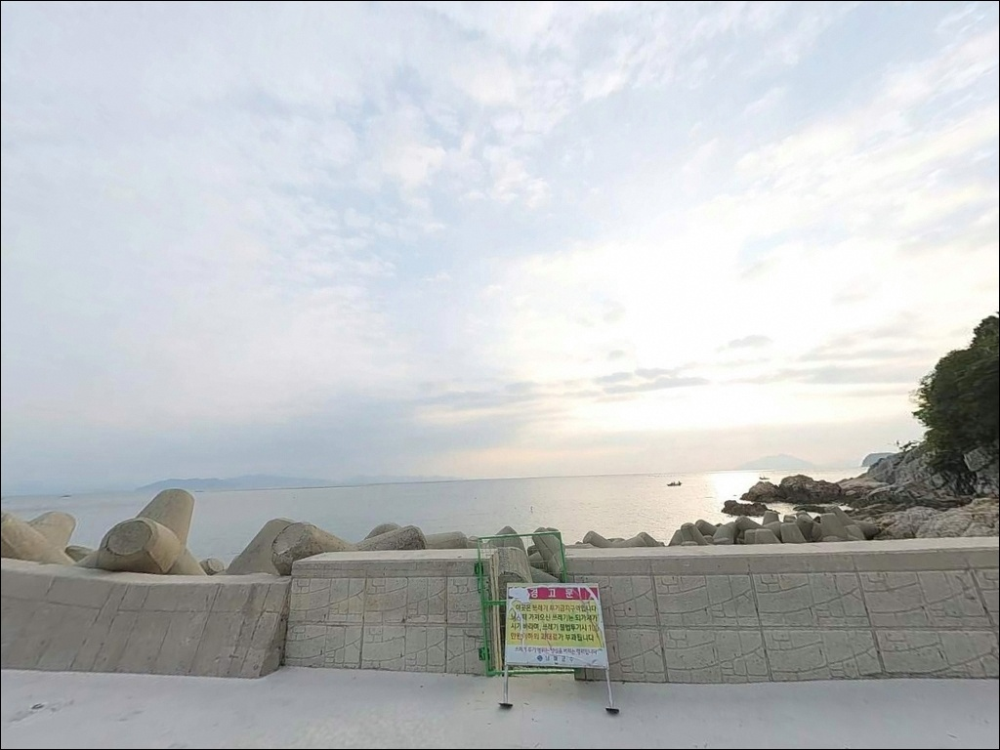
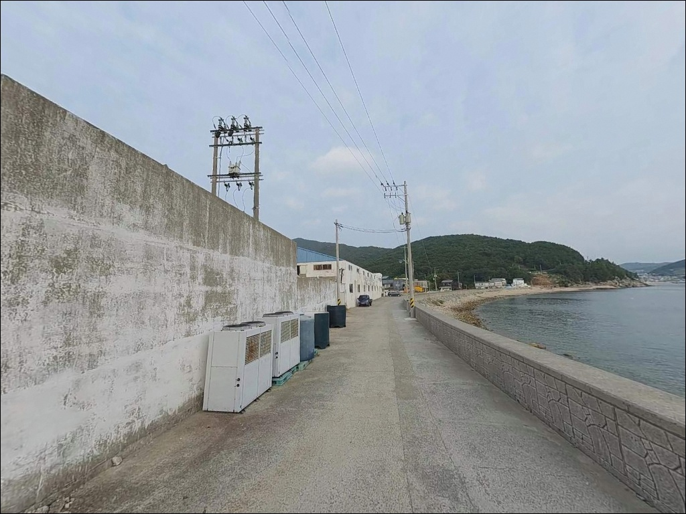

남해 대지포방파제 진입금지 표기, 바닥 유실 테트라 주변 무늬오징어 에깅


포인트 안내
대지포방파제
경남 남해군 삼동면 물건리 1044-2
방파제 초입 도로 바닥에
진입금지 문구가 크게 표기되어 있습니다.
차량을 방파제 위로 올리려다
그 자리에서 진입을 포기하는 경우가 생기는 이유입니다.
주차 위치 판단이 이 포인트 방문의 첫 관문입니다.
이 글은 대지포방파제의
진입 동선, 차박 체류 여건,
지형 기반 낚시 방식 선택 기준에 집중합니다.
조황 단정이나 특정 어종 보장은
이 글의 범위에 포함되지 않습니다.

1. 진입 동선과 포인트 접근성
대지포방파제는 남해군 삼동면 동부대로변에서
대지포 마을 방향 포장도로를 따라 들어가면
방파제에 닿는 구조입니다.
해안도로에서 거리 자체는 짧지만
마을 내부 도로 폭이 좁아
대형 SUV나 캠핑 장비를 갖춘 차량은
진입 전 위성지도로 동선을 확인하는 편이 좋습니다.
방파제 초입 도로 바닥에는
진입금지 표기가 노란색으로 크게 새겨져 있습니다.
차량을 방파제 상단까지 올리는 것은 피해야 하며,
마을 내 공터 또는 도로변 확장 구간에
주차 후 장비를 도보로 이동하는 방식이
이 포인트의 기본 접근 동선입니다.
방파제 직전 공터와 마을 진입로 초입
넓어지는 구간이 주차 후보 1·2순위입니다.
어선 하적장 주변은 어민 작업 공간으로
주차가 어렵습니다.
회차는 방파제 인근 공터에서 가능하며,
낚시인 쓰레기 문제로
방파제 주변 주차를 제한하는 남해도 마을이
적지 않으므로 현장 상황을 먼저 확인하는 것이
안전합니다.

2. 차박 환경과 야간 체류 여건
대지포는 어촌마을 주택이 모여 있는
소규모 마을 구조입니다.
민가 밀집도가 중간 이상이고
야간에도 생활 소음과 빛이 어느 정도 존재하는 환경이라
완전히 조용한 차박지를 찾는 분께는
맞지 않는 구조입니다.
방파제 입구 외곽 주차 공간은
넓지 않은 편이라 차박을 메인으로 삼기에는
공간 여건이 제한적입니다.
인근 독일마을 방면 관광지 인프라와
해안도로가 가깝기 때문에
차량 왕래도 완전히 끊기지 않습니다.
야간 낚시를 마치고 차 안에서
잠깐 머무는 수준의 체류는 가능하지만,
외항 테트라 구간은 방파제 등대 외에
별도 조명이 없어
헤드랜턴과 예비등은 필수입니다.
남해안 특성상 야간에 바람이 갑자기 강해지는 경우가 있어
기상 확인 후 체류 여부를 판단하는 것이 안전합니다.


3. 주변 편의시설 및 인프라 현황
대지포방파제 반경 3km 이내에는
물건리·독일마을 일대 관광 상권이 형성되어 있어
식당·카페 이용이 가능한 환경입니다.
소규모 상점도 차량으로 수 분 거리에 위치합니다.
낚시 소품과 식재료는 출발 전 준비해 오는 편이
현장에서 불필요한 이동을 줄이는 방법입니다.
낚시 물품과 식사 인프라를 제대로 갖추려면
차로 약 15~20분 거리의
삼동면 지족리 소재지 방면을 이용하거나,
10km권의 미조항 방면으로 이동하면
편의점·마트·낚시점을 함께 해결할 수 있습니다.
공중화장실·주차장 운영 여부 등
개별 시설 정보는 현장에서 직접 확인해야 합니다.
응급 상황 발생 시
남해읍 방면까지 거리가 상당하므로
비상약품과 수분은 출발 전 챙기는 것이 기본입니다.

4. 진입 전 반드시 챙겨야 할 준비사항
대지포방파제에서 낚시 여건을 가르는
첫 번째 변수는 물때입니다.
들물 타이밍에 방파제 콧부리 주변으로
조류가 훑고 지나가면서
입질 빈도가 뚜렷하게 올라가는 패턴이
이 포인트의 기본 구조입니다.
바다타임에서 물건리 기준 물때를 확인하고
들물 타이밍에 맞춰 입장 시각을 계획하는 것이
출조 전 가장 먼저 할 일입니다.
외항 테트라 구간과 갯바위는
수심 차가 크고 암초가 많아
채비 손실이 잦습니다.
여분 채비는 넉넉하게 준비하고,
에깅의 경우 여러 호수대 에기를
갖추고 가는 편이 실수를 줄입니다.
남해안은 기상 변화가 빠른 편입니다.
당일 아침 기상청 파고·풍속 예보를
다시 한번 확인하고 출발하는 것이 기본입니다.
테트라 구간 이동 시 미끄럼 사고 위험이 높으므로
구명조끼와 미끄럼 방지화는
선택이 아닌 기본 안전 장비입니다.

5. 수중여가 만드는 낚시 여건 — 지형 기반 분석
대지포방파제의 핵심은
수중에 유실된 테트라포드입니다.
방파제 축조 당시 유실된 테트라들이
방파제 전역 바닥에 분포하면서
인공 수중여 역할을 하고 있습니다.
이 구조가 다양한 해초 군락 형성으로 이어져
어류의 은신처와 먹이 환경을
자연스럽게 만들어냈습니다.
방파제 길이는 150m로 소형 방파제 규모이며,
전반 수심은 4~6m입니다.
방파제 콧부리와 그 주변에서
5~7m로 수심이 한 단계 깊어지는 구간이 형성되어 있습니다.
외항 쪽으로는 갯바위가 연결되고,
내항 안쪽으로는 자갈·몽돌밭이 이어지는 구조라
방파제 한 곳에서도 복수의 공략 구간을
선택할 수 있습니다.
수심이 깊지 않고 수중 지형이 복잡하기 때문에
멀리 던지는 것보다
발밑에서 중거리 구간을 집중적으로 공략하는 방식이
이 포인트에 맞습니다.
초입 좌측 계단형 구간은
수중 테트라가 밀집해 있어
근거리 공략에 특히 유리한 자리입니다.
출조 전에 최신 조황은 꼭 검색해 보시기 바랍니다.


6. 포인트에 어울리는 낚시 스타일
이 포인트에서 지형 조건이 가장 잘 맞는 낚시는
무늬오징어 에깅입니다.
외항 테트라 주변과 방파제에 연결된
몽돌·자갈 여밭, 인접 갯바위 구간이
에깅의 핵심 공략 구간입니다.
수심 3~5m의 얕은 구간에서도
2kg급 무늬오징어가 배출된 기록이 있어
샬로우 에깅이 유효한 포인트입니다.
5~6월과 9~11월이 집중 시즌입니다.
볼락 라이트게임은 야간 출조에 잘 맞는 스타일입니다.
외항 테트라 상단·측면과 내항 자갈밭 모두에서
공략이 가능하며,
가로등 영향으로 생기는
반영과 그늘 경계 구간을 노리는 운용이 주류입니다.
겨울부터 이듬해 봄까지
야간 마릿수를 기대해볼 수 있는 시기입니다.
원투낚시는 내항 선착장 구간과
내항 전역에서 활용할 수 있습니다.
수중 테트라 경계에 채비를 떨어뜨리는 방식으로
감성돔·볼락·쥐노래미·농어 등
이 지형에서 기대해볼 수 있는 어종을 노립니다.
원거리를 고집하기보다
구조물 인접 공략이
이 포인트에서 안정적인 선택입니다.
찌낚시와 민장대는 내항 자갈밭과
방파제 발밑에서 운용합니다.
해초가 무성한 시기에는
루어보다 자연스럽게 미끼를 흘리는
찌낚시 방식이 유효한 경우가 있습니다.

7. 대안 포인트와 플랜 B 동선
대지포방파제 주차 공간이 여의치 않거나
조류 조건이 맞지 않을 때
첫 번째 대안은 은점방파제입니다.
대지포에서 1~2km 거리로 가장 가까우며,
외항 테트라와 방파제 구조가 형성되어 있어
야간 볼락 환경이 안정적입니다.
같은 물건리 해역에서 더 넓은 자리와
다양한 공략 구간이 필요하다면
삼동면 남면 석교리의
월포방파제를 연계 출조 대안으로 활용할 수 있습니다.
대지포와 함께 에깅 포인트로
묶어서 다니는 동선이 이 해역에서 일반적입니다.
규모 있는 인프라와 함께
대형 방파제 낚시 환경이 필요하다면
10km 거리의 미조항이 현실적인 선택지입니다.
낚시 물품 현지 조달과 식사까지
한 번에 해결할 수 있는 남해군 동부권
거점 어항입니다.

주차 동선만 미리 잡으면
대지포방파제는 준비된 포인트입니다
무늬오징어 에깅이나 볼락 야간낚시를
즐기는 낚시인이라면
대지포방파제의 테트라·수중여·갯바위 조합은
지형 조건 면에서 잘 맞는 구조입니다.
방파제 규모는 작지만
공략 구간이 외항·내항·갯바위로 나뉘어
복수 방식을 병행할 수 있는 곳입니다.
반면 차량 방파제 진입이 제한되어 있고
마을 밀집 환경이라 차박 여건은 좋지 않습니다.
조용한 노지 차박지를 원한다면
다른 포인트를 기점으로 삼는 편이 현실적입니다.
물때 확인, 주차 동선 사전 파악, 여분 채비,
이 세 가지가 준비된 낚시인에게
대지포방파제는 충분히 실속 있는 포인트가 됩니다.
낚시 후 간단히 차 안에 머물며
물건리 해안 도로를 배경으로 새벽을 맞는 차박이라면,
에깅 시즌과 볼락 야간낚시를 엮어
남해 동부권 하루 출조로 계획하기에 나쁘지 않은 곳입니다.